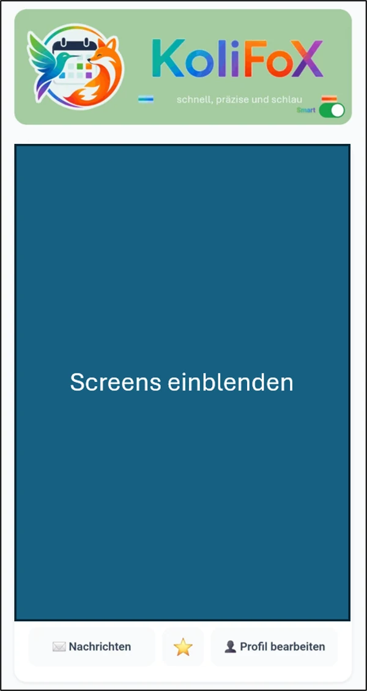

KI-gestützte Fachbereichs-Auswahl
Du beschreibst deine Beschwerden in eigenen Worten. KoliFoX schlägt die passende Fachrichtung vor — damit du nicht beim falschen Facharzt landest.
KI-gestütztschnell, präzise und schlau
KoliFoX findet die passende Fachrichtung zu deinen Beschwerden, zeigt Praxen und Apotheken in deiner Nähe und stellt dringende Anfragen direkt an eine Praxis — oder an alle Praxen einer Fachrichtung in deiner Region.
Kostenlos für Patienten · Ohne Installation im Browser · Datenhaltung in Frankfurt

56 Fachrichtungen — von Allgemeinmedizin bis Zahnmedizin
Alles in einer Anwendung, ohne Wechsel zwischen Portalen — und ohne Anruf in der Praxis.
Du beschreibst deine Beschwerden in eigenen Worten. KoliFoX schlägt die passende Fachrichtung vor — damit du nicht beim falschen Facharzt landest.
KI-gestütztPraxen in deiner Umgebung, nach Entfernung sortiert. Mit deinem Standort findest du auch unterwegs und im Urlaub eine Praxis der richtigen Fachrichtung.
StandortbezogenÜber 17.000 Apotheken in Deutschland, ebenfalls nach Entfernung sortiert — mit Adresse und Telefonnummer.
StandortbezogenDu brauchst heute einen Termin? Schildere dein Anliegen einmal — die Praxis entscheidet und meldet sich. Kein Warten in der Telefonschleife.
Am selben Tag Akut? Du hast Beschwerden und brauchst heute einen Arzt? KoliFoX fragt für dich an — bei einer Praxis oder gleich mehreren in deiner Region.Krankschreibung nötig, aber kein Termin frei? Stell die AU-Anfrage direkt aus der App — mit allen Angaben, die die Praxis dafür braucht.
Ohne Anruf AU-Schein? Du benötigst eine Arbeitsunfähigkeitsbescheinigung? Ausstellen kann sie nur deine Praxis. KoliFoX bringt deine Anfrage dorthin — ohne Telefonschleife.Du hast einen Überweisungsschein? Fotografiere ihn ab und sende ihn an eine Praxis der überwiesenen Fachrichtung — ohne Umweg.
Neu Überweisung? Du hast eine Überweisung bekommen? KoliFoX bringt sie zur passenden Fachpraxis — samt deiner Anfrage, ohne Telefonschleife.Pollenflug, UV-Index, Hitzewarnungen und Meldungen des RKI — ein Tipp auf den Knopf „Meldungen“ auf dem Startbildschirm. Für die Region genügen deine Postleitzahl oder deine gewählte Region — GPS ist optional.
NeuAlle Anfragen gehen verschlüsselt an die Praxen, werden auf Servern in Frankfurt (EU) verarbeitet und spätestens nach 7 Tagen automatisch gelöscht.
Datenhaltung in FrankfurtJede Anfrage wird protokolliert und ist als PDF abrufbar: wann du angefragt hast, was die Praxis geantwortet hat, was vereinbart wurde.
Für deine UnterlagenKoliFoX ist keine Patientenakte und speichert deine Krankengeschichte nicht dauerhaft. Angaben zu Beschwerden und — bei einer Überweisungs-Anfrage — das Foto deines Überweisungsscheins werden nur für die konkrete Anfrage an die gewählte Praxis übermittelt und danach gelöscht.
Deine Daten liegen auf Servern in Frankfurt (EU).
Anfragedaten werden spätestens nach 7 Tagen automatisch gelöscht, nicht auf Vorrat gespeichert.
KoliFoX verwaltet Termine und Anfragen, keine Krankengeschichte.
Was mit deiner Anfrage passiert, steht in deinem Protokoll.
Konto anlegen, Praxis speichern, fertig. Ab dann siehst du deine Termine und kannst Anfragen stellen — im Browser oder als App auf dem Handy.
schnell, präzise und schlau
Dringende Anfragen und AU-Wünsche kommen schriftlich und vollständig herein — statt dreimal zu klingeln. Ihr Team entscheidet, was wann bearbeitet wird. Ohne neue Praxissoftware, ohne Installation.
Läuft im Browser · Rollen für Sekretariat, Ärzte und Labor · Server in Deutschland
Fertiger AV-Vertrag · Zwei-Faktor-Anmeldung · Automatische Löschfristen
Seit gestern Abend starke Schmerzen, Wange geschwollen. Heute erreichbar ab 9 Uhr.
Erkältung seit Montag, bittet um Krankschreibung bis Freitag.
Darstellung nachgebildet — echte Ansicht im Praxis-Cockpit
Für jede Fachrichtung — mit eigenen Rückfragen je Fachbereich
Vier Dinge, die Ihr Team sofort merkt.
Das Praxis-Cockpit nimmt Ihrem Team diese Aufgaben ab.
Anfragen erreichen Sie schriftlich und vorqualifiziert. Sie legen fest, wie viele Sie pro Tag annehmen — ist das Fenster voll, wird automatisch abgelehnt.
Kapazität im GriffÖffnungszeiten, Urlaub, Rufbereitschaft: Was Sie hinterlegen, gilt. Außerhalb Ihrer Zeiten nimmt KoliFoX keine Anfragen an.
Kein NachtdienstNeue Anfragen melden sich per Push oder E-Mail — niemand muss den Bildschirm im Auge behalten.
Push & E-MailMehrere Praxen einer Fachrichtung und Region teilen sich das Anfrage-Aufkommen. Wer zuerst zusagt, übernimmt — die anderen sind entlastet.
RegionalPatienten checken selbst ein und sehen ihre Position. Ihr Team verteilt auf Sprechzimmer, ruft auf und leitet weiter — ohne Zettel.
Im HausJeder Zugriff mit Rolle, Nutzer und Zeitpunkt protokolliert. Trägt zur Nachweisführung nach Art. 5 Abs. 2 DSGVO bei, als PDF für Ihre Unterlagen. Ihre Behandlungsdokumentation nach § 630f BGB bleibt davon unberührt im PVS.
NachvollziehbarWas Ihre Praxis für den DSGVO-konformen Einsatz braucht — fertig vorbereitet, belegbar, nachweisfähig.
Supabase EU-Region Frankfurt. TLS 1.3 im Transport, AES-256 bei Speicherung. Die Versichertennummer wird je Praxis zusätzlich einzeln verschlüsselt.
EU-RechenzentrumAuftragsverarbeitungsvertrag nach Art. 28 DSGVO mit allen technisch-organisatorischen Maßnahmen liegt vor — Sie müssen weder eigene Verträge entwerfen noch Dienstleister einzeln prüfen.
AVV + AnhängeAlle Cockpit-Konten — Sekretariat, Anfrage-Annahme, Ärztinnen, Ärzte, Assistenz — werden ab dem Pilotbetrieb zwei-Faktor-pflichtig. Keine Komfort-Option, sondern Standard.
Pflicht ab PilotbetriebVorfall-Register nach Art. 33 Abs. 5 DSGVO geführt, Meldepflicht-Bewertung je Vorfall. Falls etwas passiert, läuft die Benachrichtigung Ihrer Praxis entlang eines definierten Pfads.
Art. 33 geführtKoliFoX verarbeitet Patient:innen-Anfragen in Ihrem Auftrag (Art. 28 DSGVO). Die Behandlungsentscheidung bleibt vollständig bei Ihnen. Keine Mitnutzung Ihrer Daten für Produktverbesserung.
Sie bleiben VerantwortlicheInhaltsdaten werden je nach Anfrageart automatisch gelöscht, spätestens nach 7 Tagen. Nachweis-Spuren ohne medizinischen Inhalt bleiben drei Jahre für Nachprüfungen.
Keine AufräumarbeitKein Vertriebstermin nötig, kein Wechsel Ihrer Praxissoftware.
Sie füllen das Antragsformular aus: Praxisdaten, Fachrichtung, Öffnungszeiten.
Wir prüfen die Angaben und schalten Ihr Praxis-Konto frei. Die Anmeldung läuft ab dem Pilotbetrieb mit Zwei-Faktor-Schutz.
Räume und Zeiten eintragen, Team einladen — ab dann erreichen Sie Anfragen schriftlich im Cockpit.
KoliFoX ist fertig entwickelt und läuft. Für die erste Praxisgruppe nehmen wir uns Zeit für Einrichtung und Schulung.